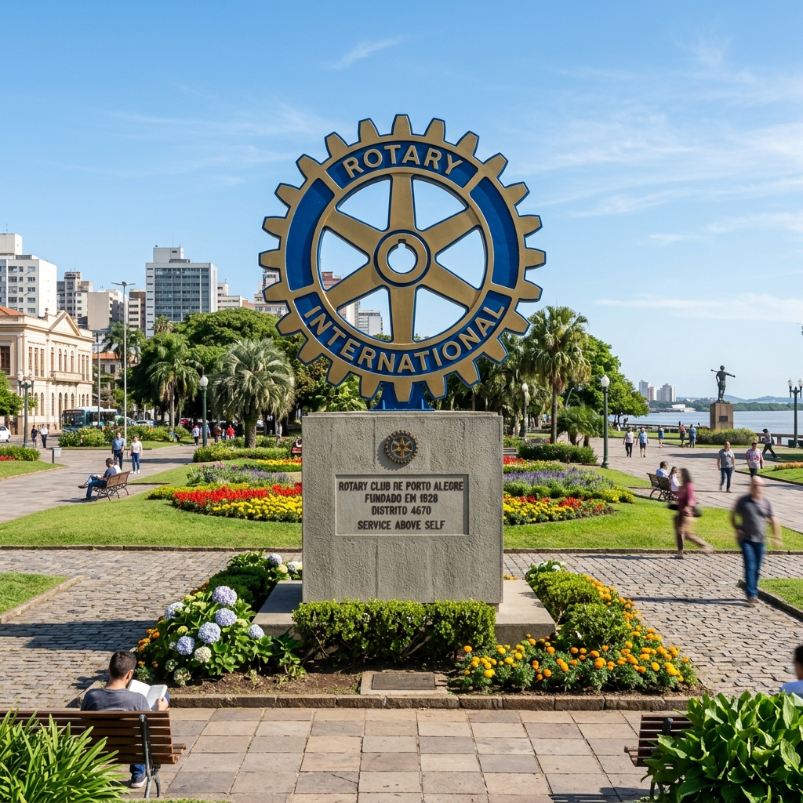
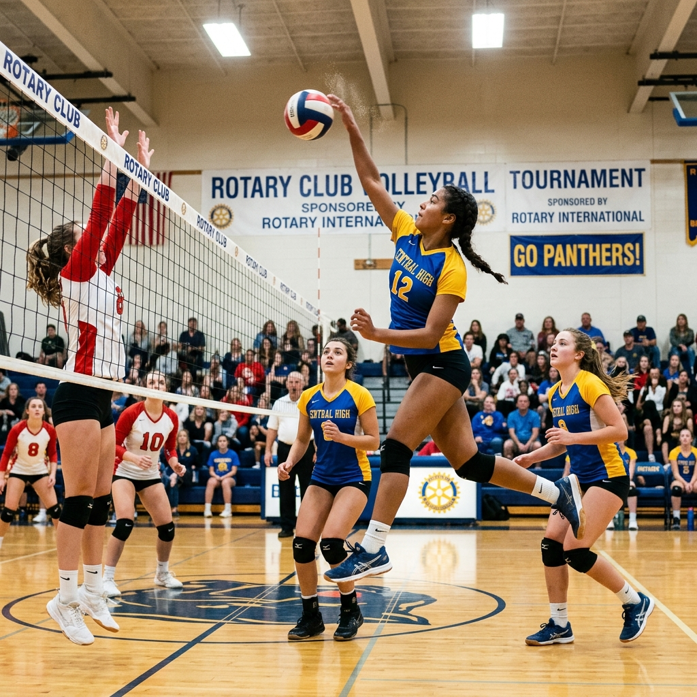
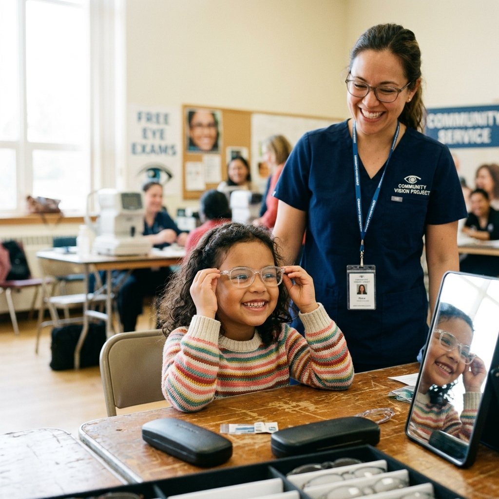
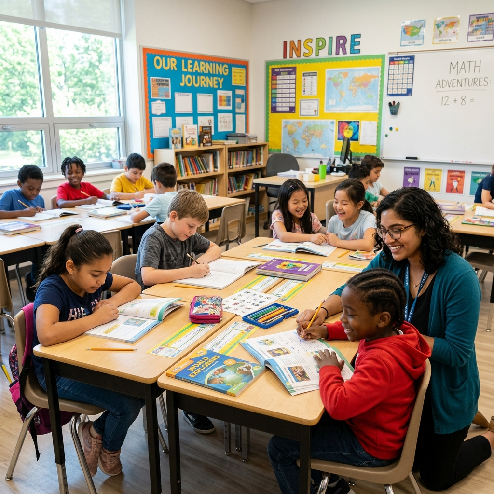
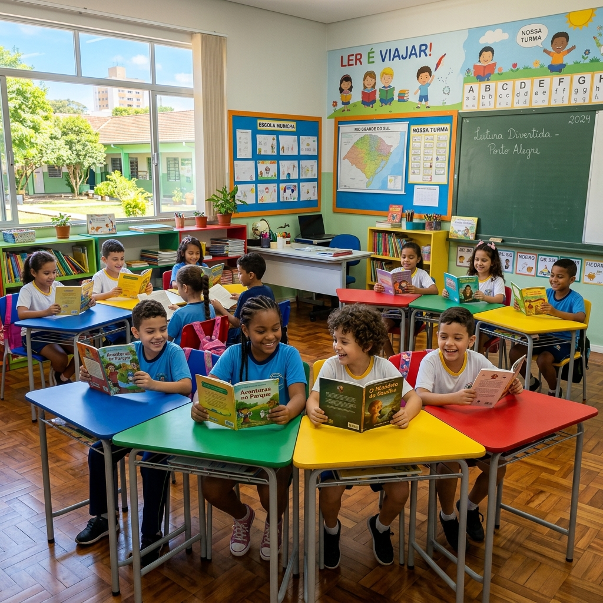

A transformação começa com uma escolha. Escolha como deseja participar:
Sua contribuição fortalece projetos que impactam vidas reais. Escolha onde doar:
👉 Torne-se Rotariano e transforme vidas com propósito. Junte-se a líderes comprometidos com o voluntariado ético.
Quer entender melhor o alcance do nosso trabalho? Descubra nossos destaques abaixo
Saiba mais sobre a nossa organização local e o movimento global.
O Rotary International é uma organização mundial não governamental fundada em 1905, que reúne líderes de diversas áreas para promover mudanças positivas e sustentáveis.
Presente em mais de 200 países e regiões, o Rotary atua em causas essenciais para o desenvolvimento humano:
O Rotary Club de Porto Alegre Lindóia nasceu do desejo de fazer mais pela comunidade da zona norte da cidade. (inserir ano)
Desde sua fundação, o clube tem atuado de forma contínua, responsável e estratégica, promovendo projetos que unem educação, solidariedade e desenvolvimento social.
Ao longo dos anos, ampliamos parcerias, fortalecemos nossa presença comunitária e consolidamos iniciativas que hoje fazem parte da identidade do bairro e da cidade.
Mais do que um clube, somos um espaço de liderança ética, amizade e serviço.
Dar de Si Antes de Pensar em Si.
— Lema Oficial do Rotary International
Nossa diretoria atua de forma colaborativa, organizada e comprometida com a sustentabilidade dos projetos. Cada cargo representa responsabilidade, planejamento e cuidado com o impacto social gerado. Trabalhamos com transparência, ética e foco em resultados que transformam vidas.
(inserir nome do presidente)
Gestão (inserir ano)(inserir nome do vice-presidente)
Gestão (inserir ano)(inserir nome do secretário)
Gestão (inserir ano)(inserir nome do tesoureiro)
Gestão (inserir ano)Cada presidente que conduziu o clube deixou sua marca na construção dessa história. A linha do tempo da nossa liderança representa ciclos de dedicação, crescimento e compromisso com a comunidade. Cada gestão ampliou projetos, fortaleceu parcerias e reafirmou nosso propósito de servir.
Descubra como atuamos em educação, saúde, inclusão social e desenvolvimento humano.

A Copa Rotary de Vôlei é muito mais do que um torneio esportivo. É um espaço de formação e integração entre escolas...

Enxergar bem é aprender melhor. O Banco de Óculos arrecada, organiza e distribui óculos para crianças carentes...

Plataforma educacional gratuita com vídeos de apoio didático voltados a valores éticos e cidadania...
O Rotary Club Satélite de Porto Alegre – Lindóia Solidário nasceu com o propósito de ampliar o impacto do servir na comunidade, fortalecendo a atuação rotária por meio de novas líderes, novas ideias e novas frentes de ação.
Como parte do movimento global do Rotary International, o clube satélite compartilha os mesmos valores éticos, o mesmo compromisso com a comunidade e a mesma missão de promover mudanças positivas e sustentáveis.
O que nos move é a ação.
O que nos une é o propósito.
O que nos fortalece é a colaboração.
O Rotary Club Satélite Lindóia Solidário foi criado como extensão do clube padrinho Rotary Club de Porto Alegre Lindóia, com o objetivo de ampliar a capacidade de atuação social na região. (inserir ano)
Sua fundação representa um novo ciclo de crescimento e renovação, reunindo profissionais e voluntárias que desejam participar ativamente de projetos sociais e comunitários.
Desde o início, o clube satélite tem se destacado pela energia, engajamento e proximidade com as necessidades locais, atuando de forma prática, colaborativa e orientada para resultados. Mais do que expandir a estrutura, o clube satélite expandiu possibilidades de transformação.
A trajetória do clube satélite é construída por lideranças comprometidas com o serviço e a responsabilidade social. Cada presidente representa um período de dedicação, organização e fortalecimento das ações comunitárias.
A diretoria atual do Rotary Club Satélite Lindóia Solidário é composta por voluntárias comprometidas com a organização, a transparência e a efetividade das ações.
(inserir nome da presidente)
Gestão (inserir ano)(inserir nome da vice-presidente)
Gestão (inserir ano)Realização de campanhas e atividades que promovem apoio direto a famílias, escolas e instituições da região. Essas ações incluem mobilização de doações, organização de mutirões e participação activa em iniciativas sociais.
Campanhas sazonais e permanentes voltadas à arrecadação de alimentos, roupas, itens de higiene e materiais escolares. Cada campanha representa a união de voluntários, parceiros e comunidade em torno de um objetivo comum: gerar dignidade e cuidado.

O clube satélite mantém relacionamento contínuo com instituições beneficentes e educacionais, oferecendo suporte por meio de doações direcionadas, parcerias estratégicas e apoio estrutural a projetos sociais. Acreditamos que fortalecer instituições locais é fortalecer toda a comunidade.
Nossos eventos são momentos de encontro, mobilização e celebração do propósito.
Entre nossos principais marcos anuais estão a Copa Rotary de Vôlei, o Jantar da Solidariedade, campanhas sociais e programações especiais ao longo do ano. Cada evento é uma oportunidade de engajar a comunidade e ampliar nossa rede de impacto.
Tradicional evento beneficente para captação de recursos destinados aos projetos do clube.
Integração esportiva e social entre escolas da região norte de Porto Alegre.
Aqui compartilhamos histórias reais de transformação: resultados alcançados, campanhas realizadas, parcerias construídas e novos projetos em andamento. Transparência e conexão com a comunidade fazem parte da nossa essência.
O Rotary Club Lindóia inicia nova mobilização para apoiar famílias vulneráveis da região durante o inverno.
Postado em: (inserir data)Estão abertas as inscrições de equipes escolares para a nossa tradicional copa que promove saúde e integração.
Postado em: (inserir data)Nada representa melhor nosso trabalho do que as vozes de quem foi impactado. Relatos de jovens participantes, crianças beneficiadas, voluntários e parceiros. Histórias que mostram que servir é transformar.
"O projeto Banco de Óculos mudou a vida da minha filha. Agora ela consegue acompanhar as aulas perfeitamente!"
"Participar do programa de vôlei me ensinou sobre trabalho em equipe e me motivou a praticar esportes."
Ser rotariano é assumir o compromisso de fazer parte da solução. É desenvolver liderança com propósito. É ampliar conexões. É transformar realidades. Se você deseja fazer a diferença de forma organizada e sustentável, seu lugar pode ser aqui.
Nenhuma transformação acontece sozinha. Empresas, instituições e voluntários são fundamentais para que nossos projetos continuem crescendo. Juntos, multiplicamos impacto, fortalecemos comunidades e construímos um futuro melhor.